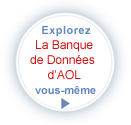

Ixquick Protège Votre Vie Privée!
Le seul moteur de recherche qui n’enregistre pas votre adresse IP.
Votre Vie Privée est menacée!

Chaque fois que vous utilisez un moteur de recherches courant, vos données de recherches sont enregistrées'. Les principaux moteurs de recherche enregistrent votre adresse IP et utilisent des cookies de suivi pour enregistrer vos termes de recherche, la date et l'heure de votre visite, et les liens sur lesquels vous avez cliqué. Ils enregistrent ensuite ces informations dans une énorme base de données.
Ces recherches révèlent une quantité choquante d'informations personnelles à votre sujet, comme vos intérêts, votre situation de famille, vos penchants politiques, votre état de santé, etc. Ces informations constituent aujourd'hui une mine d'or pour les sociétés de marketing, les autorités gouvernementales, les black-hat hackers et les criminels : tous ceux qui ne demandent qu'à mettre la main sur vos données de recherche privées.
Pourquoi devrais-je m'inquiéter ?
Les principaux moteurs de recherche ont tranquillement constitué une base de données d'informations personnelles d'une ampleur sans précédent. Malheureusement, ces données peuvent facilement tomber dans de mauvaises mains. Réfléchissez à l’histoire qui suit:
En août 2006, la communauté des internautes a été stupéfaite par la divulgation accidentelle par AOL , dans une base de données en ligne, de tous les détails et données accumulés sur les recherches effectuées pendant trois mois par 650 000 utilisateurs d’AOL.
Celle-ci peut encore être consultée. C’est un réveil brutal permettant de réaliser le cauchemar éventuel que deviendrait votre vie privée.
|  | » Taper query et trouver qui l’a utilisé » Puis cliquer sur “ Identification ” pour découvrir les autres recherches de cet utilisateur |
Scandalisé? Vous n’êtes pas le seul
Lorsque nous effectuons une recherche, nous ouvrons notre jardin secret à notre ordinateur. Ce qu’il renferme devrait être en sécurité.
La position d’Ixquick
- La vie privée est un droit inaliénable.
- Votre banque de données ne devrait en aucun cas tomber entre des mains étrangères.
- La seule véritable solution consiste à effacer rapidement vos données ou tout simplement à ne pas les conserver.
- Depuis janvier 2009, nous n’enregistrons plus les adresses IP de nos utilisateurs.
- Vos données personnelles ne sont pas transmises à des tiers.
- Nous sommes le premier et le seul moteur de recherche à faire cela.
- Nous avons depuis ajouté de nombreuses autres fonctions qui protègent votre confidentialité.
- Notre initiative reçoit une réaction extraordinairement positive
Ixquick entend fermement poursuivre sa mission qui consiste à vous offrir les meilleurs résultats dans les meilleures conditions possibles de confidentialité !
Garanties Ixquick
 |
European Privacy Seal [label européen pour la protection des informations personnelles]
|

|
Des spécialistes de la sécurité de Certified Secure's ont apporté leur soutien à Ixquick pour de l'obtention de sa certification EuroPriSe. |
Ixquick est enregistré auprès de l'Autorité néerlandaise de Protection des Données (CBP) sous le numéro M 1346973.
|
|
 |
Nous possédons le plus haut niveau de cryptage SSL du secteur ! |
Actualités
Le 10 Juin 2013
À la suite de la révélation des activités de PRISM, les clients sont en quête d'autres solutions préservant la vie privée
À la suite de la révélation des activités de PRISM, les clients sont en quête d'autres solutions préservant la vie privée
Jeudi 5 juillet 2012
Actualités: La politique de confidentialité d'Ixquick/Startpage est encore améliorée.
Actualités: La politique de confidentialité d'Ixquick/Startpage est encore améliorée.
Le moteur de recherche Web Ixquick a reçu le premier

Le 14 juillet, Ixquick s’est vu décerner le premier label européen pour la protection des informations personnelles (« European Privacy Seal »). Ixquick est maintenant le premier et unique moteur de recherche approuvé par l’UE.
Consultez ici le communiqué de presse officiel EuroPriSe.
Ixquick / StartPage dans les nouvelles
 |
 |
 |
Without Google
|
Spitze ohne Bespitzeln
|
NSA PRISM Leaks Boost Private Search Engines: St...
|
 |
 |
 |
Tracking Cookies are Crummy, says Search Engine...
|
SPrivacy pioneer search engine launches anonymous...
|
Ixquick / Startpage launches anonymous Web search...
|
 |
 |
 |
Killer way to slay the Google beast...
|
Ixquick offer anonymous web browsing with new...
|
Does Microsoft + Yahoo = A Privacy Arms Race Among...
|
 |
|
 |
Copernic First to Launch Privacy Desktop...
|
Privacy-protecting search engine ignores IP addresses
|
Protecting yourself from search engines
|
 |
||
Could meta-search engine usage shield your privacy...
|
Keep Your Internet Searches Private
|
|
TV-RADIO

Smaller email encryption companies may press tech giants like Microsoft & Google, expert predicts
RT Network (RT.com)

Privacy expert Dr. Katherine Albrecht discusses StartPage's new state-of-the-art encryption technology
The Informational Arms Race

An overview of the Ixquick search engine and how it protects users from NSA surveillance
Russia Today: Privacy services companies stand up against Big Brother


The founders of Startpage.com meet Alex Jones
Infowars.com
Pour ses usagers un moteur de recherches à la mémoire courte. (RealAudio ou MP3)
National Public Radio
Autres Articles de Poids:
Quand les compagnies ont le pouvoir de recouper les informations émanant de plusieurs sources, les conséquences sur la vie privée sont effrayantes: Les services de Google:
Les services de Google:
Wikipedia
Debunking Google's log anonymization propaganda
CNET News.com
Google: futur "big brother"?
dossiersdunet.com
Google épie vos moindres gestes.
Techcrunch
Ils savent tout de vous.
The Guardian
Opérateur
Ixquick.com est détenu et exploité par Surfboard Holding BV, Postbus 1079, 3700 BB Zeist Pays-Bas. Veuillez vous adresser à Robert E.G. Beens
( ) pour toute question relative à la protection des informations confidentielles.
) pour toute question relative à la protection des informations confidentielles.
Les services de Google:
Wikipedia
Debunking Google's log anonymization propaganda
CNET News.com
Google: futur "big brother"?
dossiersdunet.com
Google épie vos moindres gestes.
Techcrunch
Ils savent tout de vous.
The Guardian

(
) pour toute question relative à la protection des informations confidentielles.